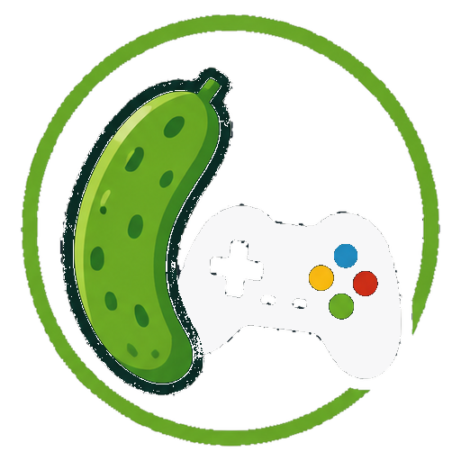

All Games
📊 Your Stats
🏆 Achievements

PICKLE ARCADE CONSOLEIf you're on Xbox, the browser is still in cursor mode — it's steering the pointer with your controller instead of handing it to the game.
On a PC: plug a controller in and press a button to wake it. Mouse and keyboard work too — arrow keys move, Enter selects, Esc goes back.